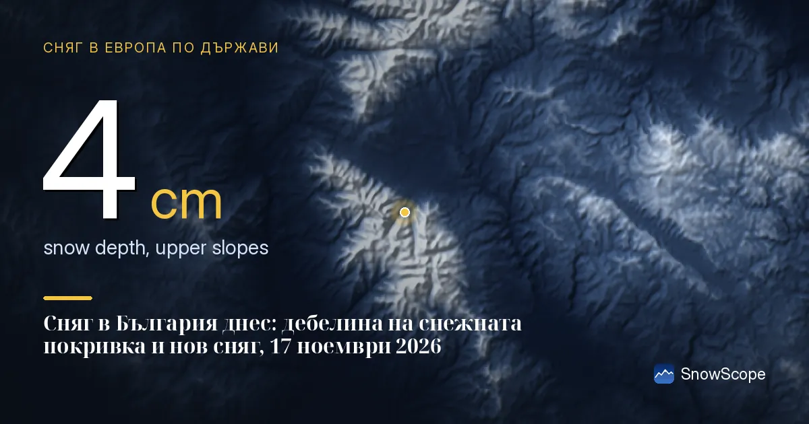

Снежни бюлетини · Сняг в Европа по държави
Сняг в Европа по държави: В България около 360 км² са под сняг днес (вторник, 17 ноември). Това е с 330 км² по-малко от вчера.
Snow by country today
The whitest countries today: Poland (100 %), Serbia (100 %) and Slovakia (100 %).
Most new snow in the week ahead: Norway (54 cm), Greece (33 cm) and Sweden (32 cm).
| Country | White | Deepest resort | Next 7 days |
|---|---|---|---|
| Poland | 100 % | Kasprowy Wierch · 34 cm | 7 cm |
| Serbia | 100 % | Kopaonik · 22 cm | 7 cm |
| Slovakia | 100 % | Vysoké Tatry · 30 cm | 5 cm |
| Kosovo | 100 % | Brezovica · 36 cm | 9 cm |
| Austria | 98 % | Stubaier Gletscher · 71 cm | 10 cm |
| Ukraine | 98 % | Драгобрат · 25 cm | 4 cm |
| Bulgaria | 97 % | Bansko · 45 cm | 22 cm |
| Hungary | 97 % | Dobogókő Sípálya · 9 cm | 0 cm |
| Sweden | 97 % | Björkliden · 136 cm | 32 cm |
| Norway | 96 % | Riksgränsen · 165 cm | 54 cm |
| Finland | 95 % | Pyhä · 26 cm | 8 cm |
| Slovenia | 93 % | Sella Nevea · 50 cm | 2 cm |
| North Macedonia | 89 % | Скијачки центар Попова шапка · 33 cm | 19 cm |
| Czechia | 78 % | Náprava · 29 cm | 7 cm |
| Andorra | 77 % | Canaro · 22 cm | 2 cm |
| Bosnia and Herzegovina | 76 % | Jahorina olimpijski centar · 19 cm | 7 cm |
| Montenegro | 73 % | Ski centar Savin kuk · 37 cm | 5 cm |
| Switzerland | 71 % | Les Marecottes · 98 cm | 6 cm |
| Croatia | 59 % | skijalište Vučići · 16 cm | 5 cm |
| Romania | 56 % | Șureanu · 39 cm | 2 cm |
| Albania | 53 % | Ski Pista Bigëll · 9 cm | 10 cm |
| Italy | 36 % | La Thuile ski · 70 cm | 4 cm |
| Germany | 35 % | Zugspitze · 92 cm | 9 cm |
| UK | 33 % | Glenshee · 35 cm | 8 cm |
| France | 23 % | La Grave · 153 cm | 3 cm |
| Greece | 20 % | Kaimaktsalan · 32 cm | 33 cm |
| Spain | 3 % | Candanchu · 36 cm | 1 cm |
| Ireland | 0 % | – | 0 cm |
| Portugal | 0 % | – | 0 cm |
Сняг в България днес: дебелина на снежната покривка и нов сняг, 17 ноември 2026

В България около 360 км² са под сняг днес (вторник, 17 ноември). Това е с 330 км² по-малко от вчера.
Снежна покривка днес
Това е близо до 330 км² от преди седмица. Снежната граница е около 2 300 м.
събота, 28 ноември 2026
неделя, 22 ноември 2026
четвъртък, 19 ноември 2026

вторник, 17 ноември 2026

понеделник, 16 ноември 2026

SnowScope на телефонаДебелина на снега за всеки курорт, известия за пухкав сняг и 3D карта, безплатно.
Изтеглете приложението